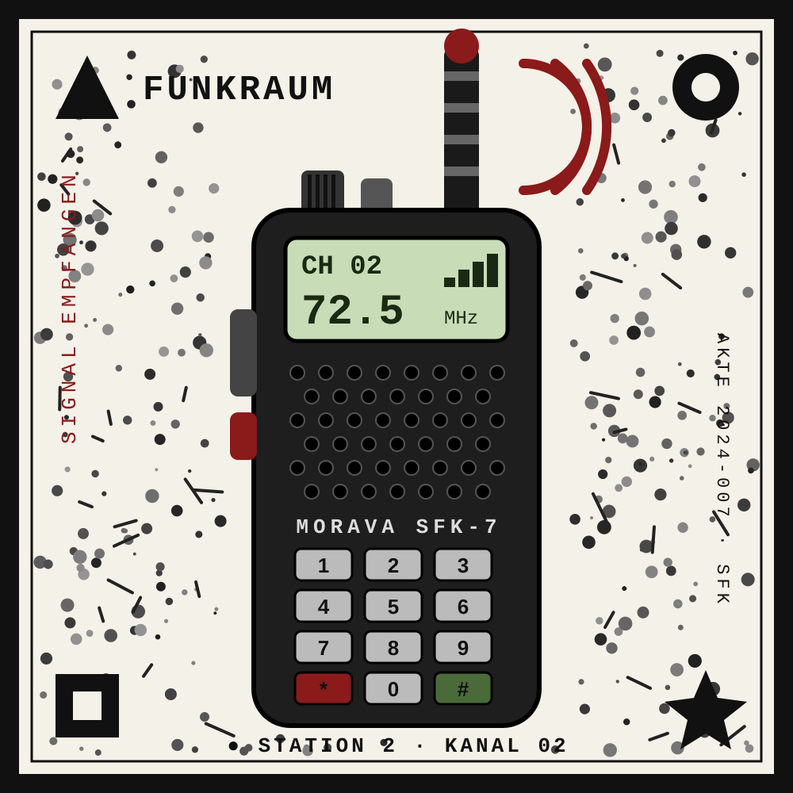

Requisit 2 — Station ● Funkraum: Marker (S. 1), Abhörprotokoll (S. 2), Lehrer-Vorlage (S. 3)

Entlang der gestrichelten Linie ausschneiden · auf festen Karton kleben · nicht glänzend laminieren
Flach auf den Stationstisch legen oder als Aufsteller hinstellen — nicht knicken, nicht abdecken.
ABGEHÖRT
SICHERHEITSBEHÖRDE
SONDERABTEILUNG ∅∅ Funküberwachung · Abt. für Anomale Ereignisse
KANAL0272,5 MHz
AKT NR.:2024-∅∅7 / KATEGORIE SHADOW
BETREFF:Unbekannte Funksignale — Funkraum der Schule
BETROFFENER:E. MORAVA, Privatdetektiv — vermisst
STATUS:SIGNAL AKTIV — NICHT ENTSCHLÜSSELT
// SACHVERHALT
Seit dem Verschwinden von E. Morava empfängt die alte Funkanlage der Schule jede Nacht Signale auf
Kanal 02. Sie kommen aus keinem bekannten Sender. Unsere Techniker hören nur Rauschen —
und manchmal eine Stimme, die nach einem Kennwort fragt.
Morava war Funker, bevor er Detektiv wurde. Wir vermuten: Er sendet selbst.
Von aus, wo ihn niemand erreicht.
// MITSCHNITT DER LETZTEN NACHT
23:41Rauschen. Lichtflackern im Funkraum.
23:44Stimme: „… nur mit Kennwort … sie hört mit …“
23:46Kamera zeigt eine Gestalt neben dem Funkgerät. Mit bloßem Auge: nichts.
23:47Die Gestalt blinkt mit den Augen. Kurz, lang, kurz … Danach Stille.
⚠ AUFTRAG — FANGT MORAVAS KENNWORT AB
Scannt das Funkgerät auf dem Tisch mit eurem Handy.
Eine Kreatur erscheint. Ihre Augen morsen das Kennwort. Grünes Aufleuchten = das Signal beginnt.
Schreibt jedes Zeichen mit und entschlüsselt es mit Moravas Funk-Notizen (Morse-Tabelle).
Tippt auf den Bildschirm, öffnet das Funkgerät und gebt das Kennwort ein.
Kennwort: → Morava antwortet mit dem Code-Teil für Feld ●
„Die Kamera sieht, was wir nicht sehen. Benutzt sie.“ — E.M.
ABHÖRPROTOKOLL · FUNKRAUMNicht für die Öffentlichkeit
✂ LEHRER-VORLAGE — Station 2 / ● Funkraum (NICHT für Schüler)
Ablauf: Funkgerät-Marker scannen → Kreatur erscheint, ihre Augen morsen das Kennwort in Schleife
(grünes Aufleuchten = Anfang, oben Zähler „BUCHSTABE 1/4“) → mitschreiben und mit der Morse-Tabelle entschlüsseln →
nach einem vollständigen Durchgang Bildschirm antippen → Funkgerät öffnet sich → Kennwort eingeben →
Morava meldet sich und funkt den Code-Teil.
Kennwort:CLUE (C –·–· · L ·–·· · U ··– · E ·) ·
Code-Teil für Feld ●:725 · falsches Kennwort = 30 s Sperre
Aufbau der Station
Marker (Seite 1) ausschneiden, auf Karton kleben und in die Mitte des Tisches legen —
oder als Aufsteller hinstellen. Gedruckt 12 × 12 cm (nicht kleiner als 8 × 8 cm), matt, gut beleuchtet, keine Spiegelungen.
Abhörprotokoll (Seite 2) und Morse-Tabelle daneben legen, Stifte bereitlegen.
Tisch mit einem Schild „● FUNKRAUM“ kennzeichnen.
Optional: altes Radio oder Walkie-Talkie als Deko, gedämpftes Licht (der Marker selbst muss aber hell genug sein).
Marker-Datei
Der Scanner erkennt alle Motive über eine Datei: assets/targets/scanner.mind.
Sie wird im MindAR-Compiler (hiukim.github.io/mind-ar-js-doc/tools/compile) aus allen Bildern in
assets/targets/scanner-bilder/ erstellt — alle auf einmal, in der Reihenfolge der Nummern
(das Funkgerät ist 3-funkgeraet.png). Die Druckgröße des Markers spielt dafür keine Rolle;
das Motiv selbst aber nicht mehr verändern — sonst erkennt die Kamera es nicht.
Häufige Fehler
Das E ist ein einzelner kurzer Punkt und wird leicht übersehen — auf den Zähler „BUCHSTABE 4/4“ hinweisen.
Wird der Marker nicht erkannt: näher heran, Licht verbessern, Spiegelungen vermeiden.
Tipp-Stufen (mündlich)
1. „Wartet auf das grüne Aufleuchten und schreibt erst dann mit.“
2. „Achtet auf die Form: rund = Punkt, Schlitz = Strich.“
3. „Das Wort ist Englisch und hat mit Detektiven zu tun.“